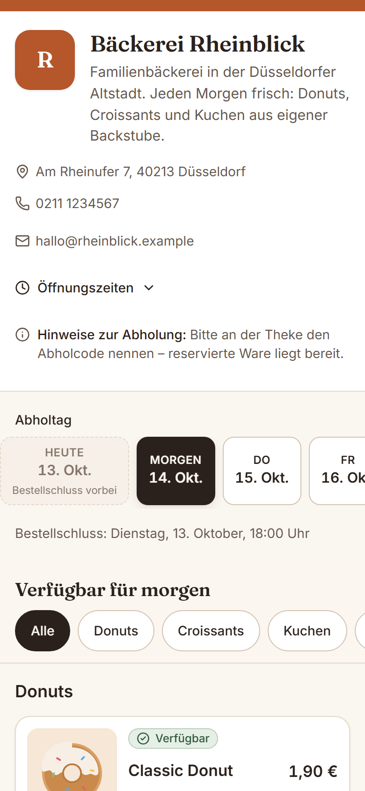
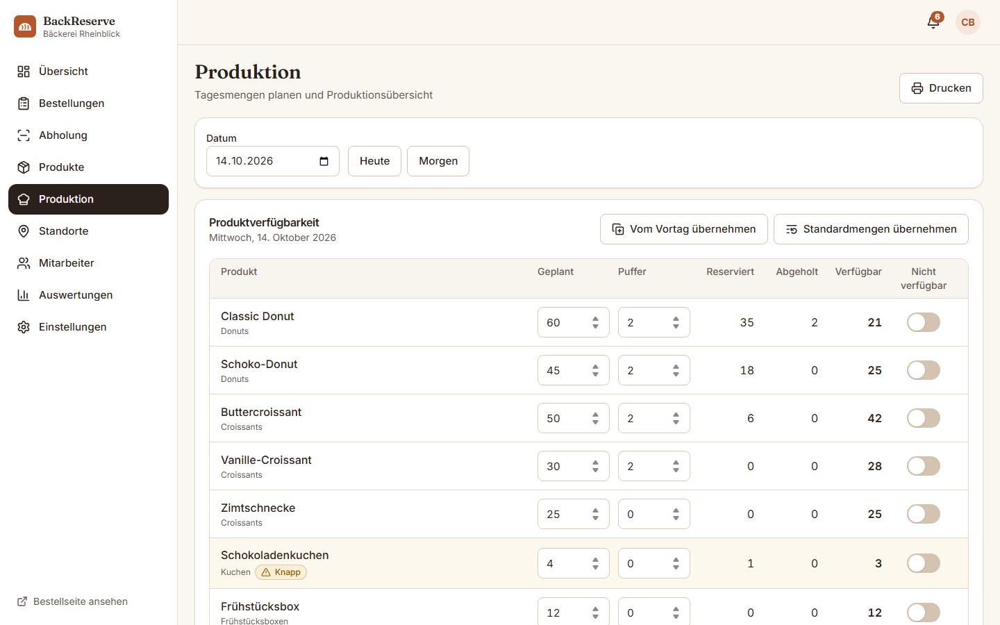
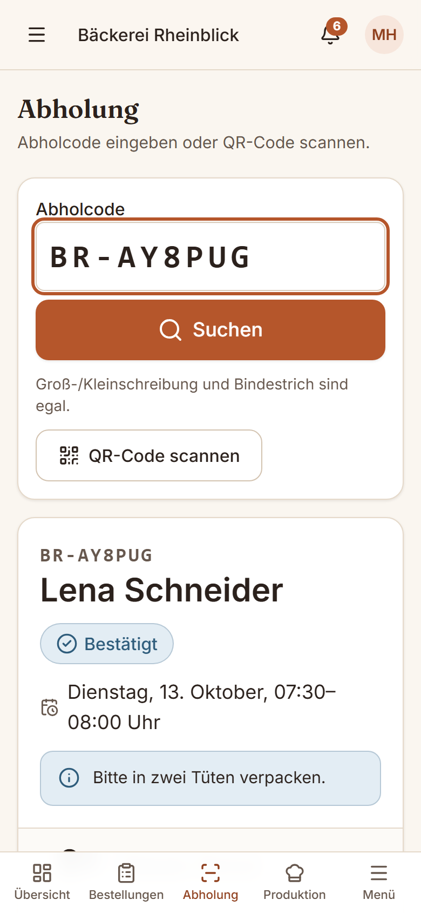

Für Ihre Kundschaft
Produkt wählen, Abholzeit festlegen, fertig. Die Reservierung ist garantiert – mit Abholcode und QR-Code per E-Mail.
Für Bäckereien, Konditoreien & Donut-Shops
Ihre Kundschaft reserviert Brötchen, Donuts und Kuchen online für eine feste Abholzeit. Sie wissen schon am Vorabend, was gebraucht wird – und niemand steht morgens vor leeren Regalen.

Bestellungen per Telefon, WhatsApp oder handgeschriebener Liste kosten Zeit und gehen unter. BackReserve bündelt alle Vorbestellungen an einem Ort – mit verlässlichen Mengen und klaren Abholzeiten.
Produkt wählen, Abholzeit festlegen, fertig. Die Reservierung ist garantiert – mit Abholcode und QR-Code per E-Mail.
Die Produktionsübersicht zeigt, wie viel pro Produkt und Zeitfenster reserviert ist. Planen statt schätzen.
Code eingeben oder QR scannen, Bestellung prüfen, als abgeholt markieren. Wenige Fingertipps, auch zur Stoßzeit.
Über Ihren Link, Ihre Website oder Social Media – ohne App und ohne Registrierung.
Nur was wirklich verfügbar ist, wird angezeigt. Ausverkauftes ist klar gekennzeichnet.
Abholcode vorzeigen, Ware mitnehmen, wie gewohnt an der Theke bezahlen.
Preise, Fotos, Allergene und die verfügbare Menge pro Tag und Filiale.
Zeitfenster, Kapazität pro Fenster, Bestellschluss und Schließtage – je Standort.
Bestellungen vorbereiten, als abholbereit markieren und an der Theke übergeben.
Bewusst einfach gehalten – keine Lieferlogistik, kein Marktplatz, keine Provision.
Der Bestand wird beim Bestellen sofort reserviert. Auch bei vielen gleichzeitigen Bestellungen wird nie mehr verkauft als vorhanden.
Feste Zeitfenster mit Kapazitätsgrenze, Bestellschluss am Vortag und Vorlaufzeit für Torten – pro Standort konfigurierbar.
Jede Reservierung erhält einen gut lesbaren Code wie BR-7K4M9X. Das Team findet die Bestellung in Sekunden.
Geplant, reserviert, noch verfügbar – je Produkt und Abholfenster. Mengen vom Vortag übernehmen mit einem Klick.
Bestände, Abholzeiten und Mitarbeiterrechte pro Standort. Filialleitungen sehen nur, was sie betrifft.
Inhaber, Filialleitung und Mitarbeitende mit passenden Rechten. Einladung per E-Mail, ohne Passwörter weiterzugeben.
Reservierungen pro Tag, Produkt und Abholzeit, Stornierungen und Nicht-Abholungen. Export als CSV.
Die Bestellseite läuft in jedem Browser. Für das Team gibt es zusätzlich eine App mit QR-Scanner (Android & iOS, in Vorbereitung).
Für eine Reservierung genügen Vorname und E-Mail. Kundendaten werden nach einer einstellbaren Frist automatisch anonymisiert.


30 Tage kostenlos testen. Keine Provision pro Bestellung, keine Einrichtungsgebühr.
19 €/ Monat
Für die kleine Bäckerei mit einer Filiale.
Beliebt
39 €/ Monat
Für Betriebe, die Produktion planen wollen.
79 €/ Monat
Für mehrere Filialen unter einem Dach.
Alle Preise zzgl. gesetzlicher MwSt. BackReserve befindet sich in der Einführungsphase; während der Testphase entstehen keine Kosten und es werden keine Zahlungsdaten abgefragt.
Nein. Die Bestellseite funktioniert in jedem Browser. Für eine Reservierung reichen Vorname und E-Mail-Adresse; Nachname und Telefonnummer können Sie optional verlangen.
Ganz klassisch bei der Abholung in Ihrer Bäckerei. BackReserve wickelt keine Zahlungen ab und speichert keine Kartendaten.
Sobald die freigegebene Menge reserviert ist, wird das Produkt für diesen Tag als ausverkauft angezeigt. Bereits bestätigte Reservierungen bleiben selbstverständlich gültig.
Ja, bis zu einer von Ihnen festgelegten Frist – zum Beispiel bis 18:00 Uhr am Vortag. Die Menge steht danach automatisch wieder zur Verfügung.
Ja. Jede Filiale hat eigene Abholzeiten, Kapazitäten und Tagesmengen. Mitarbeitende sehen nur die Standorte, denen sie zugeordnet sind.
Sie als Bäckerei. BackReserve zeigt Ihre Angaben zu Allergenen und Zutaten genau so an, wie Sie sie hinterlegen, und ergänzt Ihren Hinweistext – es werden keine Angaben automatisch erzeugt.
Kundendaten werden nur für die Reservierung genutzt. Nach einer von Ihnen einstellbaren Frist werden Kontaktdaten abgeschlossener Bestellungen automatisch anonymisiert.
In wenigen Minuten eingerichtet: Bäckerei anlegen, Produkte eintragen, Link teilen.